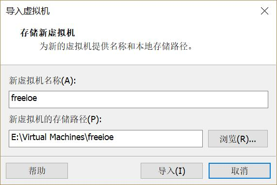
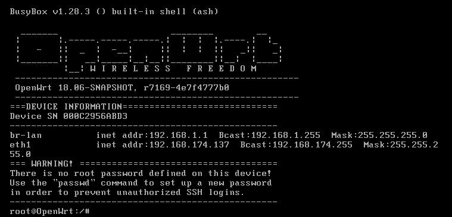
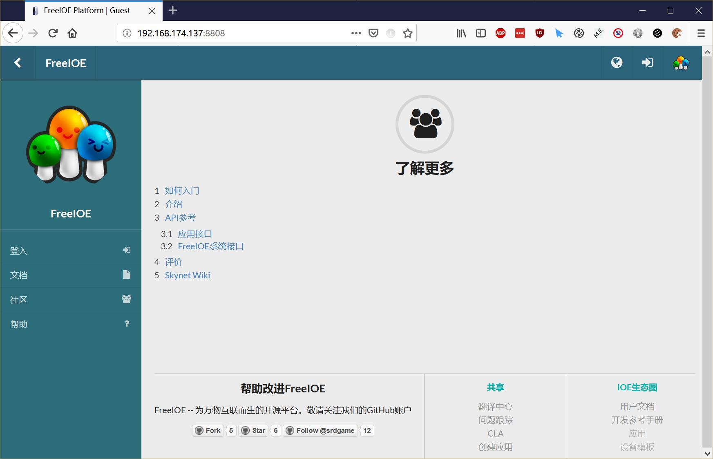
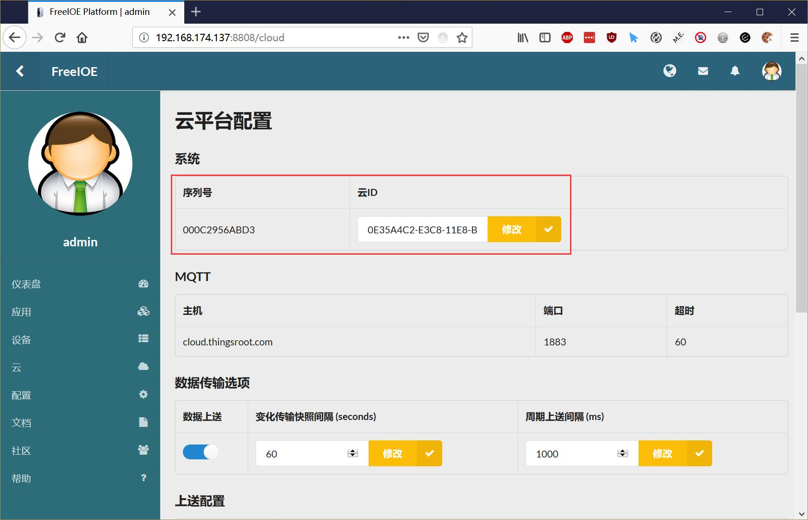

| 虚拟网关序列号 | 状态 | 网关名称 | 网关描述 | 操作 |
|---|---|---|---|---|
# 虚拟网关使用指南
点击下载：FreeIOE虚拟网关 MD5:24E3C9D773BCA05F292D7BF78402A8F6
运行FreeIOE虚拟网关
将下载的FreeIOE.zip解压，使用虚拟机软件(VMware Workstation 或者 VirtualBox)打开
使用VMware Workstation运行FreeIOE说明
- 在解压后的目录下双击freeioe.ovf文件，在Windows系统在会自动使用VMware Workstation打开并弹出导入界面，如下图所示：
 - FreeIOE虚拟机基于OPEWRT系统，默认带2块网卡，第一块网卡是LAN口，连接主机的虚拟网卡1；第二块网卡是WAN口，连接到主机的物理网卡。可根据自己的网络环境修改。
- 启动虚拟机，等待十几秒FreeIOE启动完成后，在虚拟机中按回车键查看虚拟机的IP地址，如下图所示：
 - FreeIOE虚拟机运行后，登录地址为上一条所说的虚拟机运行起来后看到的IP地址，使用浏览器登录到FreeIOE系统，http://xxx.xxx.xxx.xxx:8808，登录后界面如下图所示：
 - 登录FreeIOE系统，默认的用户名/密码：admin/admin1
- 登录后，在左侧导航中点击云，进行FreeIOE连接平台的序列号修改，如下图所示：
 - 将自己账户下的虚拟网关序列号选择一个（在本页面的上面表格中，如没有，申请即可），复制并填入云ID文本框中，点击修改后，再点击下方的重启按钮重启FreeIOE即可。
- 登录平台后，在自己的名下就出现了刚增加的FreeIOE虚拟网关，给它改个名称，接下来就开始体验吧。